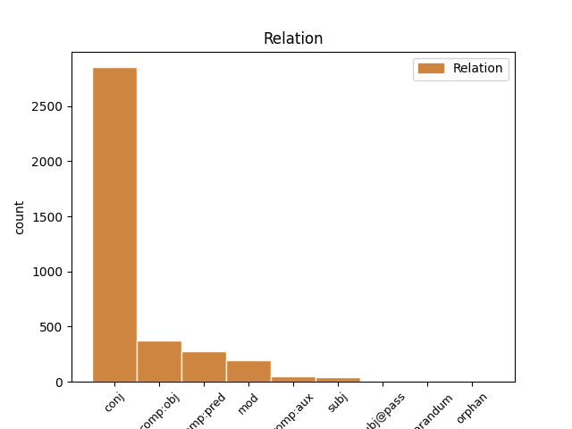
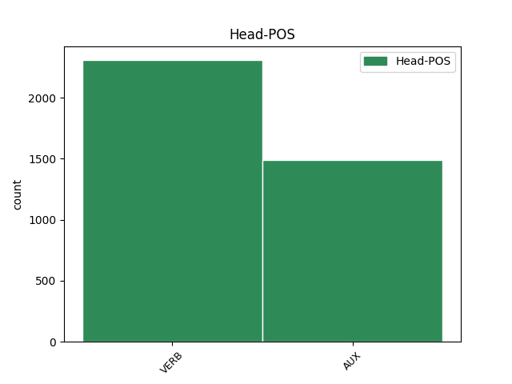
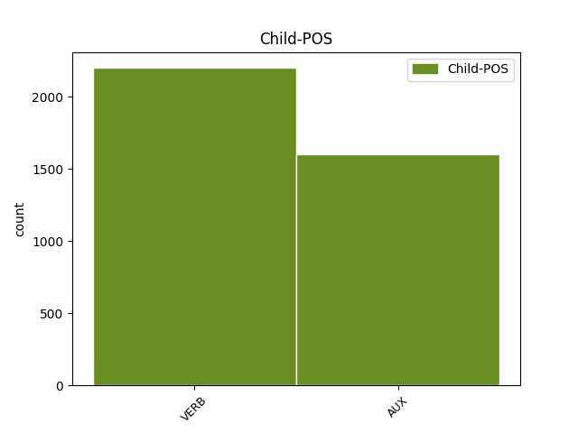

Distribution of features within this leaf



Agreement Rules sorted by frequency.
- When the dependent token is the conjunct(conj) of the head token,
1 Du _ _ _ _ 0 _ _ _
2 må måtte AUX _ Mood=Ind|Tense=Pres|VerbForm=Fin 0 _ _ _
3 være _ _ _ _ 0 _ _ _
4 innstilt _ _ _ _ 0 _ _ _
5 på _ _ _ _ 0 _ _ _
6 at _ _ _ _ 0 _ _ _
7 du _ _ _ _ 0 _ _ _
8 kan _ _ _ _ 0 _ _ _
9 få _ _ _ _ 0 _ _ _
10 fire _ _ _ _ 0 _ _ _
11 årstider _ _ _ _ 0 _ _ _
12 på _ _ _ _ 0 _ _ _
13 en _ _ _ _ 0 _ _ _
14 dag _ _ _ _ 0 _ _ _
15 , _ _ _ _ 0 _ _ _
16 mye _ _ _ _ 0 _ _ _
17 tåke _ _ _ _ 0 _ _ _
18 , _ _ _ _ 0 _ _ _
19 vind _ _ _ _ 0 _ _ _
20 og _ _ _ _ 0 _ _ _
21 regn _ _ _ _ 0 _ _ _
22 , _ _ _ _ 0 _ _ _
23 men _ _ _ _ 0 _ _ _
24 det _ _ _ _ 0 _ _ _
25 blir bli VERB _ Mood=Ind|Tense=Pres|VerbForm=Fin 2 conj _ _
26 aldri _ _ _ _ 0 _ _ _
27 veldig _ _ _ _ 0 _ _ _
28 kaldt _ _ _ _ 0 _ _ _
29 . _ _ _ _ 0 _ _ _
1 Her _ _ _ _ 0 _ _ _
2 kan _ _ _ _ 0 _ _ _
3 vi _ _ _ _ 0 _ _ _
4 lese _ _ _ _ 0 _ _ _
5 om _ _ _ _ 0 _ _ _
6 rettene _ _ _ _ 0 _ _ _
7 og _ _ _ _ 0 _ _ _
8 se _ _ _ _ 0 _ _ _
9 korte _ _ _ _ 0 _ _ _
10 filmsnutter _ _ _ _ 0 _ _ _
11 som _ _ _ _ 0 _ _ _
12 viser vise VERB _ Mood=Ind|Tense=Pres|VerbForm=Fin 0 _ _ _
13 hvor _ _ _ _ 0 _ _ _
14 råvarene _ _ _ _ 0 _ _ _
15 kommer komme VERB _ Mood=Ind|Tense=Pres|VerbForm=Fin 12 comp:obj _ _
16 fra _ _ _ _ 0 _ _ _
17 . _ _ _ _ 0 _ _ _
1 - _ _ _ _ 0 _ _ _
2 Så _ _ _ _ 0 _ _ _
3 spørsmålet _ _ _ _ 0 _ _ _
4 er være AUX _ Mood=Ind|Tense=Pres|VerbForm=Fin 0 _ _ _
5 egentlig _ _ _ _ 0 _ _ _
6 om _ _ _ _ 0 _ _ _
7 ytringsfriheten _ _ _ _ 0 _ _ _
8 finnes finnes VERB _ Mood=Ind|Tense=Pres|VerbForm=Fin 4 comp:pred _ _
9 for _ _ _ _ 0 _ _ _
10 folk _ _ _ _ 0 _ _ _
11 som _ _ _ _ 0 _ _ _
12 ikke _ _ _ _ 0 _ _ _
13 har _ _ _ _ 0 _ _ _
14 samme _ _ _ _ 0 _ _ _
15 meninger _ _ _ _ 0 _ _ _
16 som _ _ _ _ 0 _ _ _
17 " _ _ _ _ 0 _ _ _
18 vanlige _ _ _ _ 0 _ _ _
19 nordmenn _ _ _ _ 0 _ _ _
20 " _ _ _ _ 0 _ _ _
21 , _ _ _ _ 0 _ _ _
22 skriver _ _ _ _ 0 _ _ _
23 hun _ _ _ _ 0 _ _ _
24 i _ _ _ _ 0 _ _ _
25 kronikken _ _ _ _ 0 _ _ _
26 . _ _ _ _ 0 _ _ _
1 Vil ville AUX _ Mood=Ind|Tense=Pres|VerbForm=Fin 6 mod _ _
2 du _ _ _ _ 0 _ _ _
3 komme _ _ _ _ 0 _ _ _
4 sjøveien _ _ _ _ 0 _ _ _
5 , _ _ _ _ 0 _ _ _
6 går gå VERB _ Mood=Ind|Tense=Pres|VerbForm=Fin 0 _ _ _
7 Smyril _ _ _ _ 0 _ _ _
8 Line _ _ _ _ 0 _ _ _
9 fra _ _ _ _ 0 _ _ _
10 Hirtshals _ _ _ _ 0 _ _ _
11 i _ _ _ _ 0 _ _ _
12 Danmark _ _ _ _ 0 _ _ _
13 . _ _ _ _ 0 _ _ _
1 Spørsmålet _ _ _ _ 0 _ _ _
2 er være AUX _ Mood=Ind|Tense=Pres|VerbForm=Fin 5 comp:aux _ _
3 om _ _ _ _ 0 _ _ _
4 den _ _ _ _ 0 _ _ _
5 vil ville AUX _ Mood=Ind|Tense=Pres|VerbForm=Fin 0 _ _ _
6 trekke _ _ _ _ 0 _ _ _
7 seg _ _ _ _ 0 _ _ _
8 tilbake _ _ _ _ 0 _ _ _
9 etter _ _ _ _ 0 _ _ _
10 valget _ _ _ _ 0 _ _ _
11 eller _ _ _ _ 0 _ _ _
12 ikke _ _ _ _ 0 _ _ _
13 , _ _ _ _ 0 _ _ _
14 sier _ _ _ _ 0 _ _ _
15 Chaabane _ _ _ _ 0 _ _ _
16 . _ _ _ _ 0 _ _ _
1 - _ _ _ _ 0 _ _ _
2 Det _ _ _ _ 0 _ _ _
3 spiller spille VERB _ Mood=Ind|Tense=Pres|VerbForm=Fin 0 _ _ _
4 ingen _ _ _ _ 0 _ _ _
5 rolle _ _ _ _ 0 _ _ _
6 hvor _ _ _ _ 0 _ _ _
7 kraftig _ _ _ _ 0 _ _ _
8 det _ _ _ _ 0 _ _ _
9 blåser blåse VERB _ Mood=Ind|Tense=Pres|VerbForm=Fin 3 subj _ _
10 , _ _ _ _ 0 _ _ _
11 forklarer _ _ _ _ 0 _ _ _
12 helikopterpilot _ _ _ _ 0 _ _ _
13 Anfinn _ _ _ _ 0 _ _ _
14 Frederiksen _ _ _ _ 0 _ _ _
15 . _ _ _ _ 0 _ _ _
1 Hva _ _ _ _ 0 _ _ _
2 som _ _ _ _ 0 _ _ _
3 vises vise VERB _ Mood=Ind|Tense=Pres|VerbForm=Fin|Voice=Pass 11 subj@pass _ _
4 når _ _ _ _ 0 _ _ _
5 og _ _ _ _ 0 _ _ _
6 og _ _ _ _ 0 _ _ _
7 på _ _ _ _ 0 _ _ _
8 hvilken _ _ _ _ 0 _ _ _
9 måte _ _ _ _ 0 _ _ _
10 , _ _ _ _ 0 _ _ _
11 styres styre VERB _ Mood=Ind|Tense=Pres|VerbForm=Fin|Voice=Pass 0 _ _ _
12 av _ _ _ _ 0 _ _ _
13 regler _ _ _ _ 0 _ _ _
14 av _ _ _ _ 0 _ _ _
15 typen _ _ _ _ 0 _ _ _
16 : _ _ _ _ 0 _ _ _
1 Etter _ _ _ _ 0 _ _ _
2 krangel _ _ _ _ 0 _ _ _
3 om _ _ _ _ 0 _ _ _
4 leiepriser _ _ _ _ 0 _ _ _
5 ble bli VERB _ Mood=Ind|Tense=Past|VerbForm=Fin 0 _ _ _
6 resultatet _ _ _ _ 0 _ _ _
7 var være VERB _ Mood=Ind|Tense=Past|VerbForm=Fin 5 reparandum _ _
8 at _ _ _ _ 0 _ _ _
9 klubben _ _ _ _ 0 _ _ _
10 måtte _ _ _ _ 0 _ _ _
11 tilbake _ _ _ _ 0 _ _ _
12 til _ _ _ _ 0 _ _ _
13 det _ _ _ _ 0 _ _ _
14 nedslitte _ _ _ _ 0 _ _ _
15 Nadderud-anlegget _ _ _ _ 0 _ _ _
16 . _ _ _ _ 0 _ _ _
1 Ikke _ _ _ _ 0 _ _ _
2 rart _ _ _ _ 0 _ _ _
3 for _ _ _ _ 0 _ _ _
4 selskapet _ _ _ _ 0 _ _ _
5 går gå VERB _ Mood=Ind|Tense=Pres|VerbForm=Fin 0 _ _ _
6 som _ _ _ _ 0 _ _ _
7 det _ _ _ _ 0 _ _ _
8 griner grine VERB _ Mood=Ind|Tense=Pres|VerbForm=Fin 5 orphan _ _
9 . _ _ _ _ 0 _ _ _
Disagree Examples:
1 Selv _ _ _ _ 0 _ _ _
2 om _ _ _ _ 0 _ _ _
3 Bondevik _ _ _ _ 0 _ _ _
4 , _ _ _ _ 0 _ _ _
5 Høyre-leder _ _ _ _ 0 _ _ _
6 Jan _ _ _ _ 0 _ _ _
7 Petersen _ _ _ _ 0 _ _ _
8 og _ _ _ _ 0 _ _ _
9 Venstre-leder _ _ _ _ 0 _ _ _
10 Lars _ _ _ _ 0 _ _ _
11 Sponheim _ _ _ _ 0 _ _ _
12 som _ _ _ _ 0 _ _ _
13 ventet vente VERB _ Mood=Ind|Tense=Past|VerbForm=Fin 14 mod _ _
14 gir gi VERB _ Mood=Ind|Tense=Pres|VerbForm=Fin 0 _ _ _
15 en _ _ _ _ 0 _ _ _
16 del _ _ _ _ 0 _ _ _
17 vage _ _ _ _ 0 _ _ _
18 svar _ _ _ _ 0 _ _ _
19 , _ _ _ _ 0 _ _ _
20 og _ _ _ _ 0 _ _ _
21 også _ _ _ _ 0 _ _ _
22 noen _ _ _ _ 0 _ _ _
23 negative _ _ _ _ 0 _ _ _
24 , _ _ _ _ 0 _ _ _
25 er _ _ _ _ 0 _ _ _
26 tonen _ _ _ _ 0 _ _ _
27 i _ _ _ _ 0 _ _ _
28 svarbrevet _ _ _ _ 0 _ _ _
29 gjennomgående _ _ _ _ 0 _ _ _
30 imøtekommende _ _ _ _ 0 _ _ _
31 . _ _ _ _ 0 _ _ _
1 José _ _ _ _ 0 _ _ _
2 Ramos-Horta _ _ _ _ 0 _ _ _
3 fra _ _ _ _ 0 _ _ _
4 Øst-Timor _ _ _ _ 0 _ _ _
5 , _ _ _ _ 0 _ _ _
6 fredsprisvinner _ _ _ _ 0 _ _ _
7 i _ _ _ _ 0 _ _ _
8 1996 _ _ _ _ 0 _ _ _
9 , _ _ _ _ 0 _ _ _
10 understreket understreke VERB _ Mood=Ind|Tense=Past|VerbForm=Fin 0 _ _ _
11 også _ _ _ _ 0 _ _ _
12 hvilket _ _ _ _ 0 _ _ _
13 viktig _ _ _ _ 0 _ _ _
14 redskap _ _ _ _ 0 _ _ _
15 FN _ _ _ _ 0 _ _ _
16 er være AUX _ Mood=Ind|Tense=Pres|VerbForm=Fin 10 comp:pred _ _
17 for _ _ _ _ 0 _ _ _
18 freden _ _ _ _ 0 _ _ _
19 , _ _ _ _ 0 _ _ _
20 - _ _ _ _ 0 _ _ _
21 men _ _ _ _ 0 _ _ _
22 freden _ _ _ _ 0 _ _ _
23 bygges _ _ _ _ 0 _ _ _
24 også _ _ _ _ 0 _ _ _
25 dag _ _ _ _ 0 _ _ _
26 for _ _ _ _ 0 _ _ _
27 dag _ _ _ _ 0 _ _ _
28 av _ _ _ _ 0 _ _ _
29 menneskene _ _ _ _ 0 _ _ _
30 , _ _ _ _ 0 _ _ _
31 over _ _ _ _ 0 _ _ _
32 hele _ _ _ _ 0 _ _ _
33 verden _ _ _ _ 0 _ _ _
34 . _ _ _ _ 0 _ _ _
1 José _ _ _ _ 0 _ _ _
2 Ramos-Horta _ _ _ _ 0 _ _ _
3 fra _ _ _ _ 0 _ _ _
4 Øst-Timor _ _ _ _ 0 _ _ _
5 , _ _ _ _ 0 _ _ _
6 fredsprisvinner _ _ _ _ 0 _ _ _
7 i _ _ _ _ 0 _ _ _
8 1996 _ _ _ _ 0 _ _ _
9 , _ _ _ _ 0 _ _ _
10 understreket understreke VERB _ Mood=Ind|Tense=Past|VerbForm=Fin 0 _ _ _
11 også _ _ _ _ 0 _ _ _
12 hvilket _ _ _ _ 0 _ _ _
13 viktig _ _ _ _ 0 _ _ _
14 redskap _ _ _ _ 0 _ _ _
15 FN _ _ _ _ 0 _ _ _
16 er _ _ _ _ 0 _ _ _
17 for _ _ _ _ 0 _ _ _
18 freden _ _ _ _ 0 _ _ _
19 , _ _ _ _ 0 _ _ _
20 - _ _ _ _ 0 _ _ _
21 men _ _ _ _ 0 _ _ _
22 freden _ _ _ _ 0 _ _ _
23 bygges bygge VERB _ Mood=Ind|Tense=Pres|VerbForm=Fin|Voice=Pass 10 conj _ _
24 også _ _ _ _ 0 _ _ _
25 dag _ _ _ _ 0 _ _ _
26 for _ _ _ _ 0 _ _ _
27 dag _ _ _ _ 0 _ _ _
28 av _ _ _ _ 0 _ _ _
29 menneskene _ _ _ _ 0 _ _ _
30 , _ _ _ _ 0 _ _ _
31 over _ _ _ _ 0 _ _ _
32 hele _ _ _ _ 0 _ _ _
33 verden _ _ _ _ 0 _ _ _
34 . _ _ _ _ 0 _ _ _
1 Du _ _ _ _ 0 _ _ _
2 skulle skulle AUX _ Mood=Ind|Tense=Past|VerbForm=Fin 0 _ _ _
3 ha _ _ _ _ 0 _ _ _
4 snakket _ _ _ _ 0 _ _ _
5 med _ _ _ _ 0 _ _ _
6 mange _ _ _ _ 0 _ _ _
7 i _ _ _ _ 0 _ _ _
8 teamene _ _ _ _ 0 _ _ _
9 rundt _ _ _ _ 0 _ _ _
10 meg _ _ _ _ 0 _ _ _
11 her _ _ _ _ 0 _ _ _
12 , _ _ _ _ 0 _ _ _
13 de _ _ _ _ 0 _ _ _
14 skjønner skjønne VERB _ Mood=Ind|Tense=Pres|VerbForm=Fin 2 conj _ _
15 det _ _ _ _ 0 _ _ _
16 ikke _ _ _ _ 0 _ _ _
17 . _ _ _ _ 0 _ _ _
1 Han _ _ _ _ 0 _ _ _
2 understreker understreke VERB _ Mood=Ind|Tense=Pres|VerbForm=Fin 0 _ _ _
3 at _ _ _ _ 0 _ _ _
4 han _ _ _ _ 0 _ _ _
5 som _ _ _ _ 0 _ _ _
6 utenriksminister _ _ _ _ 0 _ _ _
7 hverken _ _ _ _ 0 _ _ _
8 kan _ _ _ _ 0 _ _ _
9 eller _ _ _ _ 0 _ _ _
10 vil _ _ _ _ 0 _ _ _
11 blande _ _ _ _ 0 _ _ _
12 seg _ _ _ _ 0 _ _ _
13 bort _ _ _ _ 0 _ _ _
14 i _ _ _ _ 0 _ _ _
15 komiteens _ _ _ _ 0 _ _ _
16 reiseopplegg _ _ _ _ 0 _ _ _
17 , _ _ _ _ 0 _ _ _
18 men _ _ _ _ 0 _ _ _
19 i _ _ _ _ 0 _ _ _
20 går _ _ _ _ 0 _ _ _
21 kunne kunne AUX _ Mood=Ind|Tense=Past|VerbForm=Fin 2 conj _ _
22 han _ _ _ _ 0 _ _ _
23 ikke _ _ _ _ 0 _ _ _
24 dy _ _ _ _ 0 _ _ _
25 seg _ _ _ _ 0 _ _ _
26 . _ _ _ _ 0 _ _ _